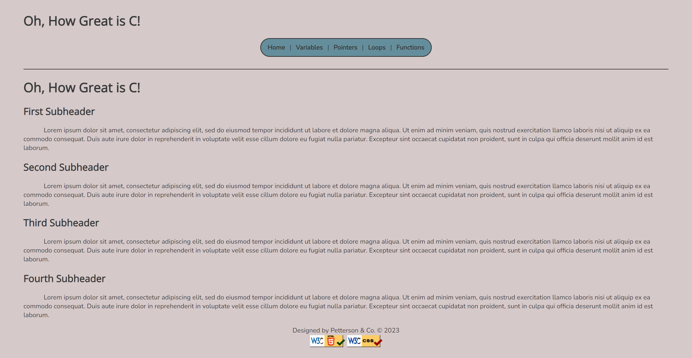

Peer Review 1
Petterson, Micah:
Page to Review:
Checklist:
- The above image does lead to the page to be reviewed when clicked.
- None of the file or folder names contain spaces or upper-case letters.
- Design Properties:
- The page's text is clear and easy to read, due to nice contrast between font colors and the background. All font sizes are big enough to clearly read.
- CSS is used properly throughout the site.
- All of the CRAP 'rules' are followed on the site. As stated above, there is sufficient contrast between different elements. Due to the designers use of proximity, it is easy to tell the relationship between different elements. Alignment and Repetition is used consistently throughout, making all pages flow nicely. Overall, due to effective use of CRAP principles, the site is aesthetically pleasing and easy to navigate.
- The pages do include a consistent header, footer, and main section.
- The header includes the site's name, as an h1, and navigation bar. It does not include the page name. The header is clearly seperated from the main content of the page, and stays consistent as users switch between pages.
- The h2 in the main does include the name of the brand, the same as h1. But this is only on the homepage, the other pages have h2 as the pages name, not the sites.
- I do not think the site has a brand tagline, unless the name of the site "Oh, How Great is C!", is also the tagline.
- The footer does include a menu for the user's pages, as well as correct CSS and HTML validation links.
- This site does cover the requirements of the assignment.
Summary:
Overall a very well designed website!! The only suggestion I have is to make the footer a little more distinctly seperated from the rest of the site. Good job :)